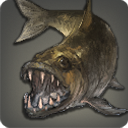

|
|
|
Wandering Sculpin |
| 50 Rivers M (2) | |
Legend states that this particular variety of sculpin is a favorite of Oschon, the Wanderer, and that the god will oft dine on this fish while on His journeys through the realm of man.
[Suitable for display in aquariums tier 2 and higher.] |
Legend states that this particular variety of sculpin is a favorite of Oschon, the Wanderer, and that the god will oft dine on this fish while on His journeys through the realm of man, for they are said to point Him in the direction of His next destination. |
|
Goosefish |
| 50 Deep Sea | |
| A large-mouthed saltwater glutton, thought to feed on most anything, from smaller fish, to seaweed, to the flesh of drowned sailors. |
A large-mouthed saltwater glutton, thought to feed on most anything, from smaller fish, to seaweed, to the flesh of drowned sailors. Pullers despise these wavekin, for once they are caught in the pullers' nets, they will devour anything else caught with them. |
|
Cave Cherax |
| 50 Lakes | |
| It is said that not even a fishing line made from adamantite wire can withstand the cutting force of this legendary giant crustacean's claws. |
It is said that not even a fishing line made from adamantite wire can withstand the cutting force of this legendary giant crustacean's claws. |
 |
Coeurlfish |
| 70 Lakes | |
| Two front teeth of this freshwater fish are exceptionally long and therefore protrude from the mouth, giving them the appearance of coeurl fangs. |
Two front teeth of this freshwater fish are exceptionally long and therefore protrude from the mouth, giving them the appearance of coeurl fangs. Fishers bitten by these wavekin will attribute those bites to a real coeurl rather than admit to their colleagues that they were had by their catch. |
|
Little Thalaos |
| 55 Deep Sea | |
| Despite the modifier, the little Thalaos is anything but small; though compared to the Thalaos of legend, even the largest of sea serpents would be deemed “little.” Normally only found far offshore in the Indigo Deep, this rare wavekin can sometimes be found swimming near the eastern cliffs of La Noscea. |
Despite the modifier, the little Thalaos is anything but small; compared to the Thalaos of legend, even the largest of sea serpents would be deemed “little.” As is the case with most deep-ocean fish, its body is composed of a thick wax-like fat and little else, making it an unpleasant addition to any dinner table. |
|
Shall Shell |
| 55 Coastlines | |
| This enormous bivalved mollusk is easily recognizable by the unique wave pattern found on its outer shell. |
This enormous bivalved mollusk is easily recognizable by the unique wave pattern found on its outer shell. An old fisher's tale tells of a man who accidentally stepped in the mouth of one during low tide. Unable to move due to the shell's crushing force, the man eventually drowned when the tide came in. |
|
Giant Donko |
| 55 Rivers | |
| A giant freshwater fish native to the rivers and swamps of La Noscea. |
A giant freshwater fish native to the rivers and swamps of La Noscea. When not feeding in the early hours of the morning, the donko spends the majority of its time sleeping on the riverbed, conserving its energy for the hunt. |
|
Sundisc |
| 55 Rivers | |
| This freshwater fish has a bright-yellow sun-like pattern across its body, giving rise to the name “sundisc.” |
This freshwater fish has a bright-yellow sun-like pattern across its body, from which it takes its name. Revered as holy by the Amalj'aa, it is forbidden amongst the beast tribe to even lay eyes upon one, let alone catch, gut, and roast one over an open flame. |
|
Mahi-Mahi |
| 55 Deep Sea |  |
| This deep-sea predator is not only massive, but deceptively fast. Some sailors swear that a mahi-mahi can make the journey from Meracydia to the Cieldalaes in less than a fortnight, though knowing most sailors, that claim may be slightly exaggerated. |
Its name meaning “stalwart” in the Lalafellin tongue, this deep-sea predator is not only massive, but deceptively fast. Some sailors swear that a mahi-mahi can make the journey from Meracydia to the Cieldalaes in less than a fortnight, though knowing most sailors, that claim may be slightly exaggerated. |
|
Halibut |
| 55 Deep Sea | |
| While similar to the sole or plaice in appearance and behavior, the halibut is much larger than both, and can feed a Lalafellin family of five for several turns of the sun. |
While similar to the sole or plaice in appearance and behavior, the halibut is much larger than both, and can feed a Lalafellin family of five for several turns of the sun. |
|
Alligator Garfish |
| 55 Lakes | |
| A legendary freshwater fish said to have a head not unlike that of an alligator, complete with rows of razor-sharp teeth. |
A legendary freshwater fish said to have a head not unlike that of an alligator, complete with rows of razor-sharp teeth. The creature is oft used by Dunesfolk mothers who seek to frighten children who do not listen to their elders, go to bed early, or chew with their mouths closed. |
|
Wootz Knifefish |
| 55 Lakes | |
| It is believed that after living in waters tainted with wootz ore for so long, this knifefish absorbed so much of the mineral that it began showing in its scales. |
After many generations of living and breeding in waters tainted with wootz ore, this knifefish has absorbed so much of the rare mineral into its body that it shows in its scales. |
|
Giant Catfish |
| 55 Lakes | |
| A giant freshwater fish found throughout Aldenard and known for the decidedly feline whiskers which it uses to detect the movement of prey. |
A giant freshwater fish found throughout Aldenard and known for the decidedly feline whiskers which it uses to detect the movement of prey. |
|
Caravan Eel |
| 55 Sands | |
| After maturing in the Grand Wake, caravan eels will form long lines in the sand and make their way back to the Sagolii Desert to spawn and die. |
After maturing in the Grand Wake, caravan eels will form long lines in the sand and make their way back to the Sagolii Desert to spawn and die. |
|
Mazlaya Marlin |
| 55 Deep Sea XL (7) |  |
A large saltwater fish found in the warm waters south of the Sea of Ash and known for its remarkable swimming speed.
[Suitable for display in aquariums tier 4 and higher.] |
A large saltwater fish found in the warm waters south of the Sea of Ash and known for its remarkable swimming speed. Legend says that after stealing one of Llymlaen's scepters and using that speed to escape, the Navigator was so infuriated that She placed a curse on the wavekin, dooming it to death if it ever slowed. |
|
Coelacanth |
| 55 Coastlines L (4) | |
An ancient species of saltwater fish which appears to have flourished in times well before the Allagans built their empire.
[Suitable for display in aquariums tier 3 and higher.] |
An ancient species of saltwater fish which appears to have flourished in times well before the Allagans built their empire. Thought normally to reside near the bottom of deep-sea trenches, the coelacanth has been known to rise to shallower waters in order to spawn─something it is believed the wavekin does only once during its hundred-summer lifespan. |
|
Cadaver Carp |
| 70 Lakes | |
| Neither dead nor necrophagous, the cadaver carp is called such because of where it chooses to live─some of the most tainted, noisome, and foul waters in all of Eorzea. |
Neither dead nor necrophagous, the cadaver carp is called such because of where it chooses to live─some of the most tainted, noisome, and foul waters in all of Eorzea. Despite this fact, however, the flesh of the cadaver carp is actually quite tasty. |
|
Rhamphorhynchus |
| 70 Skies | |
| Its massive lance-shaped nose makes this legendary denizen of the Sea of Clouds a formidable nuisance for airships passing through the area. |
Its massive lance-shaped nose makes this legendary denizen of the Sea of Clouds a formidable nuisance for airships passing through the area. Though not in any way, shape, or form a dragon, many Ishgardians believe the rhamphorhynchus to be a minion of the Dravanian Horde. |
|
Giant Squid |
| 55 Deep Sea | |
| This rarely seen giant cephalopod makes an appearance in ancient Sea Wolf mythology as the creature on which the legendary whale Bismarck fed. |
This rarely seen giant cephalopod makes an appearance in ancient Sea Wolf mythology as the creature on which the legendary whale Bismarck fed. |
|
Gigant Octopus |
| 70 Deep Sea | |
| A legendary cephalopod feared by sailors young and old. Tales of these cyclopean creatures tearing up ships and dragging them down to the abyss can still be heard in alehouses and inns across Hydaelyn. |
A legendary cephalopod feared by sailors young and old. Tales of these cyclopean creatures tearing up ships and dragging them down to the abyss can still be heard in alehouses and inns not only in Eorzea, but across Hydaelyn. |
|
Sunfish |
| 50 Deep Sea | |
| Legends say this giant saltwater fish will help those stranded in the water by allowing them to ride it back to shore. |
Legends say this giant saltwater fish will help those stranded in the water by allowing them to ride it back to shore. |
|
Dinichthys |
| 70 Deep Sea XL (7) | |
A legendary saltwater fish covered in thick armor and said to have once been worshipped by the Sahagin.
[Suitable for display in aquariums tier 4 and higher.] |
A legendary shark-eating saltwater fish covered in thick armor and said to have once been worshipped by the Sahagin. |
|
Mushroom Crab |
| 55 Lakes | |
| This amazing crab will rub its shell up against funguars to collect spores, which it will then grow on its back. Once the sporelings begin to sprout, the crab will use its claws to slice off the mushrooms and eat them. |
This amazing crab will rub its shell against funguars to collect spores, which it will then grow on its back. The fungi are said to induce visions, including those of a famous theologian who, after consuming one, claimed that he had a vision showing him the answer to the meaning of life─that answer being the number 41. |
|
Judgment Staff |
| 55 Lakes M (2) | |
Named after the primal Ramuh's signature weapon, this strange freshwater fish will only feed when the weather is rainy.
[Suitable for display in aquariums tier 2 and higher.] |
Named after the primal Ramuh's signature weapon, this strange freshwater fish will only feed when the weather is rainy. |
|
Poxpike |
| 55 Lakes | |
| The rock-hard scales of this variety of freshwater garpike are spattered with scores of unhealthy-looking spots. |
The rock-hard and rock-heavy scales of this variety of freshwater garpike are spattered with scores of unhealthy-looking spots. |
|